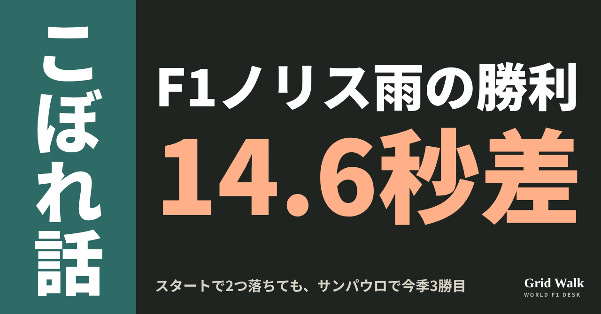
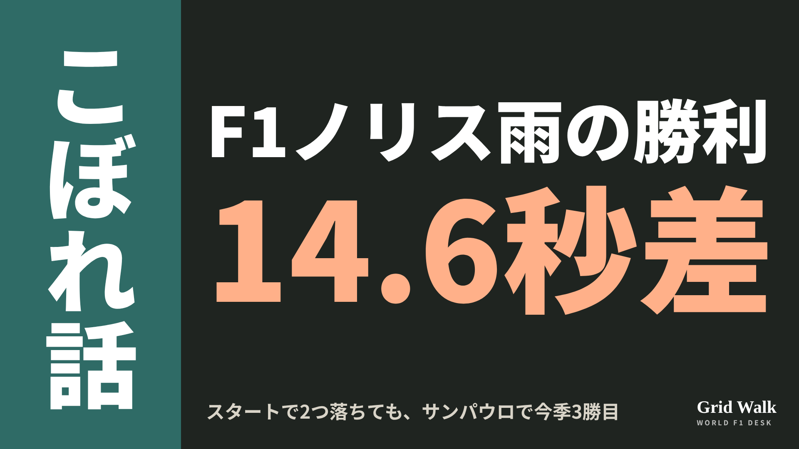
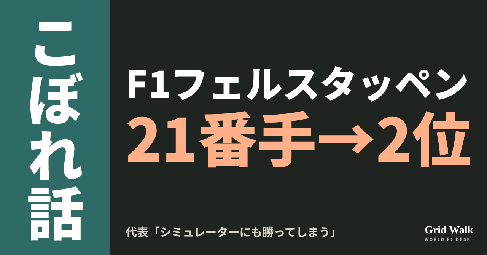
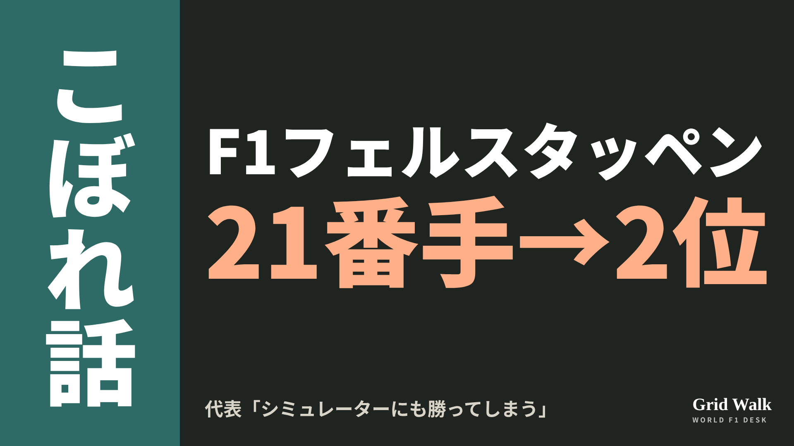
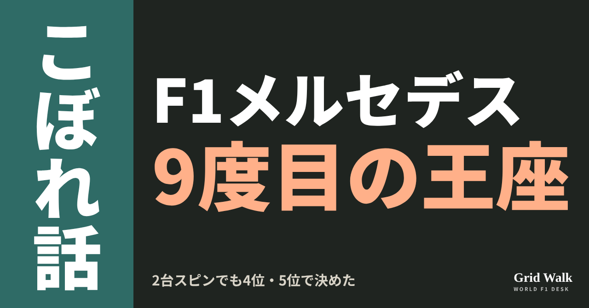
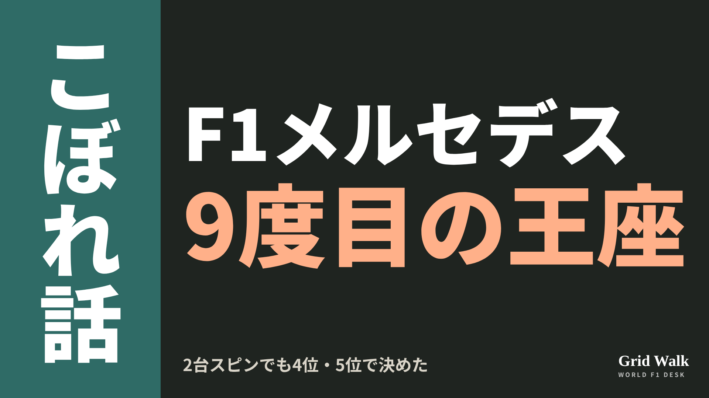
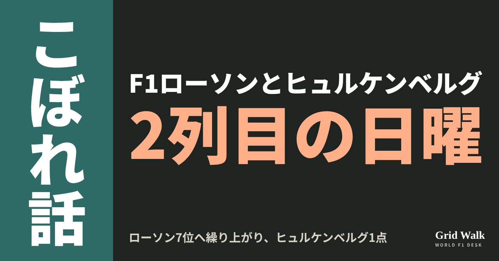
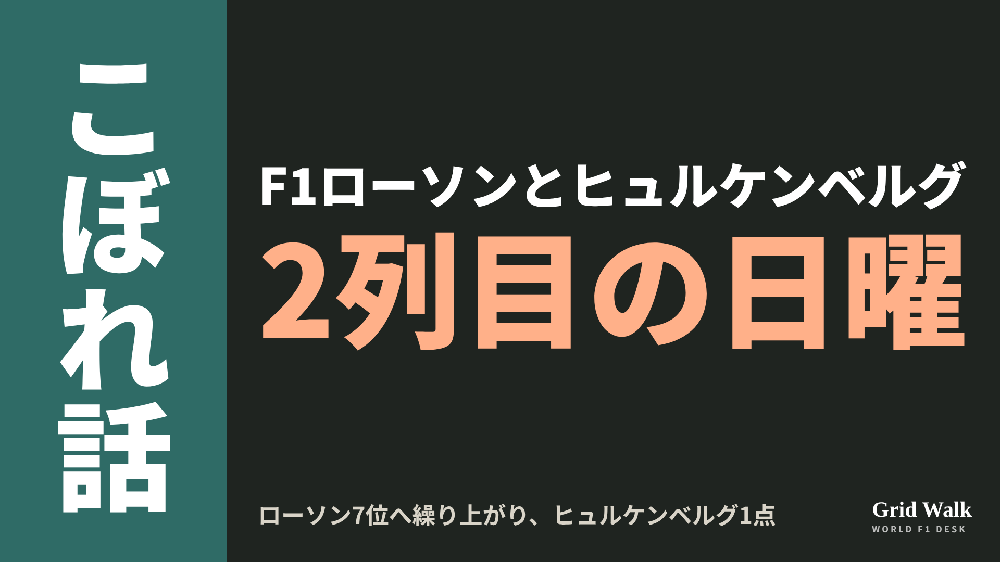
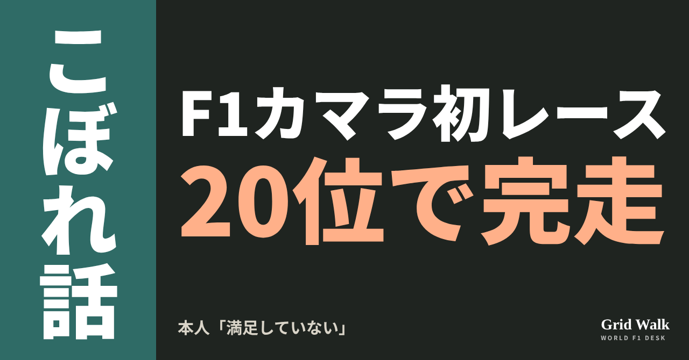
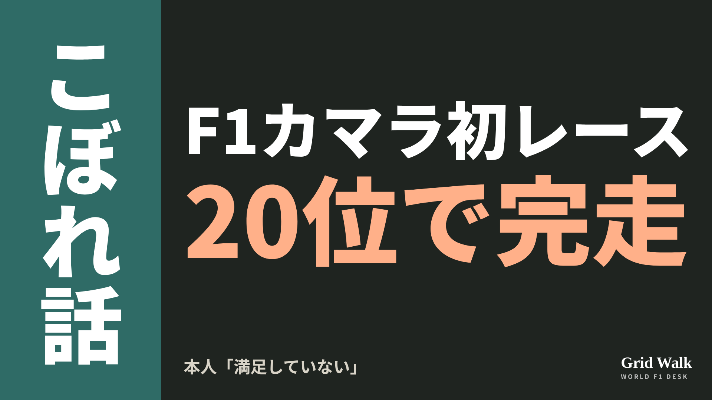

<meta charset="utf-8"><title>11/9のコラム note貼り付け</title>
<style>
/* one column of numbered paste steps; text steps vs image steps differ by marker */
:root{--bg:#F5F4F0;--card:#FFFFFF;--ink:#1D2321;--mute:#5F665F;--line:#DCDAD2;--btn:#1F5FBF;--btnok:#2E8B4F;--img:#E9F3EC;--imgink:#22663B;--sans:'IBM Plex Sans JP','Hiragino Sans','Noto Sans JP',sans-serif}
@media (prefers-color-scheme:dark){:root:not([data-theme="light"]){--bg:#171A19;--card:#202423;--ink:#ECEDE8;--mute:#A3AAA2;--line:#343937;--btn:#4D8BE6;--btnok:#3FA866;--img:#1E2C23;--imgink:#8FD3A6;color-scheme:dark}}
:root[data-theme="dark"]{--bg:#171A19;--card:#202423;--ink:#ECEDE8;--mute:#A3AAA2;--line:#343937;--btn:#4D8BE6;--btnok:#3FA866;--img:#1E2C23;--imgink:#8FD3A6;color-scheme:dark}
body{background:var(--bg);color:var(--ink);font-family:var(--sans);font-size:15px;line-height:1.75;padding:20px 16px 60px}
main{max-width:680px;margin:0 auto;display:grid;gap:28px}
header h1{font-size:22px;margin:0 0 6px;text-wrap:balance}
header p{margin:0;color:var(--mute);font-size:14px}
nav{display:flex;gap:8px;flex-wrap:wrap;margin-top:12px}
nav a{border:1px solid var(--line);border-radius:999px;padding:4px 14px;color:var(--ink);text-decoration:none;font-size:14px;background:var(--card)}
.part h2{font-size:18px;line-height:1.5;margin:0 0 12px;text-wrap:balance;display:flex;gap:10px;align-items:baseline;flex-wrap:wrap}
.tag{font-size:13px;background:var(--ink);color:var(--bg);border-radius:6px;padding:1px 9px}
.steps{list-style:none;margin:0;padding:0;display:grid;gap:12px}
.st{background:var(--card);border:1px solid var(--line);border-radius:12px;padding:12px;min-width:0}
.hd{display:flex;align-items:center;gap:8px;margin-bottom:8px}
.no{width:26px;height:26px;border-radius:50%;background:var(--btn);color:#fff;display:inline-flex;align-items:center;justify-content:center;font-size:13px;font-weight:700;flex:0 0 26px}
.im .no{background:var(--btnok)}
.hd em{font-style:normal;font-size:12px;background:var(--img);color:var(--imgink);border-radius:6px;padding:0 8px}
.bx{font-size:13.5px;line-height:1.7;border:1px solid var(--line);border-radius:8px;padding:8px 10px;max-height:110px;overflow:auto;overflow-wrap:anywhere}
.bx.tall{max-height:150px}.bx p{margin:0 0 6px}.bx h2{font-size:14px;margin:8px 0 4px}.bx a{color:var(--btn)}
.st img{display:block;width:100%;max-width:100%;border:1px solid var(--line);border-radius:8px}
.sub{font-size:12.5px;color:var(--mute);margin:6px 0 0}
.cp{width:100%;margin-top:8px;padding:12px;border:0;border-radius:10px;background:var(--btn);color:#fff;font:600 15px var(--sans);cursor:pointer}
.cp.ok{background:var(--btnok)}.cp.dl{background:var(--btnok)}.cp:focus-visible{outline:3px solid var(--ink);outline-offset:2px}
.xh{font-size:15px;margin:20px 0 10px}
.fb{font-size:13px;line-height:1.7;margin:8px 0 0;padding:8px 10px;border-radius:8px;background:var(--img);color:var(--imgink)}
.opts{display:grid;grid-template-columns:repeat(auto-fill,minmax(240px,1fr));gap:10px}
.opt{min-width:0}.opt img{display:block;width:100%;border:1px solid var(--line);border-radius:8px}
.ol{display:flex;align-items:center;gap:8px;margin-top:6px}.ol b{font-size:13px;flex:0 0 auto}.ol .on{font-size:12.5px;color:var(--mute);flex:1;min-width:0}.ol .cp{width:auto;flex:0 0 auto;padding:9px 14px}.ol .cp{margin:0;padding:9px}
.toast{font-size:13px;color:var(--mute);margin-top:6px}
</style>
<main><header><h1>11/9のコラム note貼り付け</h1><p>いま公開済みは5本です。青い番号は文章、緑は画像です。</p><nav><a href="#p1">1</a><a href="#p2">2</a><a href="#p3">3</a><a href="#p4">4</a><a href="#p5">5</a></nav></header><section class="part" id="p1"><h2><span class="tag">OFF GRID</span>ノリス、スタートで2つ落ちても14.6秒差の勝利　雨のサンパウロ</h2><p class="sub">サイトに公開：20:25</p><ol class="steps">
<li class="st im"><div class="hd"><span class="no">1</span><b>見出し画像</b><em>画像</em></div><button class="cp dl" data-img="img/norris-sao-paulo-win-20261109.png" data-name="norris-sao-paulo-win-20261109_見出し画像.png">ダウンロード</button></li>
<li class="st"><div class="hd"><span class="no">2</span><b>タイトル</b></div><div class="bx" id="p1t">ノリス、スタートで2つ落ちても14.6秒差の勝利　雨のサンパウロ</div><button class="cp" data-plain="p1t">タイトルをコピー</button></li>
<li class="st"><div class="hd"><span class="no">3</span><b>本文</b></div><div class="bx tall" id="p1r"><p>ポールから出たのに、スタートでいきなり2台に抜かれる。そこから71周のサンパウロGPを勝ち切ったのが、マクラーレンのランド・ノリスでした。2位マックス・フェルスタッペン（レッドブル）との差は14秒602。今季3勝目で、マクラーレンにとっては第12戦以来の勝利です。</p><p>F1公式のレース記事とノリスの記事へのリンク、3年連続ポールの回はサイトで → <a href="https://f1gridwalk.github.io/lens/norris-sao-paulo-win-20261109/?utm_source=note&amp;utm_campaign=norris-sao-paulo-win-20261109">https://f1gridwalk.github.io/lens/norris-sao-paulo-win-20261109/?utm_source=note&amp;utm_campaign=norris-sao-paulo-win-20261109</a></p><h2>スタートで3番手に</h2><p>土曜の雨の予選では、インテルラゴスで3年連続のポールを取っていました（その話は https://f1gridwalk.github.io/lens/norris-interlagos-pole-20261108/ で）。ところが日曜は、ぬれた路面のスタートでつまずきます。F1公式によると、2番グリッドのアンドレア・キミ・アントネッリ（メルセデス）が先頭に立ち、3番グリッドのリアム・ローソン（レーシングブルズ）も1コーナーの外から並びかけて、2コーナーで2位へ。ノリスは3番手に落ちました。</p><blockquote><p>「とても厳しいレースだった。本当に、本当に厳しかった。もちろん発進は最高とはいえなかった。でも今日は、コンディションもあって課題がたくさんあった」（ノリス、F1公式／イギリス）</p></blockquote><p>F1公式によると、ノリスはそこからうまく立て直し、タイヤの摩耗に苦しむローソンを抜いて2位に戻ると、先頭のアントネッリに狙いを定めました。</p><h2>早めのスリックと、先頭のスピン</h2><p>路面が乾いてくると、ノリスは早めにスリックへ替えた1台になります。16周目の終わりにピットに入ったとき、アントネッリとの差は7秒。アントネッリは1周あとに入り、先頭で戻ったものの、差は2秒しかありませんでした。タイヤが温まっていたノリスはすぐに0.6秒差まで詰め、20周目の1コーナーでアントネッリがスピン。ノリスが先頭に立ちました。</p><blockquote><p>「ぬれた路面でスリックに替えるのはいつだって難しい。特に、トップを狙って少し追い上げようとしているときはね」（ノリス、F1公式／イギリス）</p></blockquote><p>アントネッリはその少し前、無線で「車の何かがおかしい」と伝えていた、とF1公式は書いています。</p><h2>終盤の雨と「お返し」</h2><p>49周目の終わりの2回目のピットでいったん4番手に下がりましたが、前の車がピットに入ると先頭に戻ります。終盤に雨が戻り、各車がもう一度ピットに入るなかでも位置を守って、14秒以上の差でゴールしました。</p><blockquote><p>「今日いちばん大事だったのは、とにかく冷静さを保って、ミスをしなかったこと。必要なときにペースもあったから、よかった。また表彰台のいちばん上に戻れてうれしいし、しかもこんな場所でね」（ノリス、F1公式／イギリス）</p></blockquote><p>F1公式によると、マクラーレンはこのところメルセデス、フェラーリ、レッドブルから少し離されていましたが、インテルラゴスに持ち込んだ改良で、また上位争いに戻れたようです（改良の中身は https://f1gridwalk.github.io/lens/mclaren-interlagos-upgrades-20261105/ で）。ノリスはチームへの感謝をこう話しました。</p><blockquote><p>「ここ何週間かのように、いい結果を返せないのはもどかしい。でも今週末は、チームにお返しができたと思う。頑張りへのささやかなごほうびをね」（ノリス、F1公式／イギリス）</p></blockquote><p>なお、アントネッリはピットボックスを出るときにアルピーヌの進路に入ったとして、レース後の審議の対象になりました（F1公式）。審議の結果は5秒加算で、FIAの正式結果でも5位のままです。</p><p>ポールから一度は3番手に落ち、まだぬれた路面で早めにスリックへ替え、最後の雨もしのぐ。編集部としては、派手な追い上げよりも、ミスをしないことを積み重ねた勝利だったと見ています。</p><p><strong>先頭から7秒離れた2番手で路面が乾き始めたら、あなたなら早めにスリックへ替えますか？ それとも様子を見ますか？</strong></p><p>━━━━━━━━━━</p><p><strong>F1 Grid Walk では、世界のF1ニュースを毎日日本語でまとめています。</strong></p><p>海外の記事の要約を、毎日載せています。</p><p><a href="https://f1gridwalk.github.io/">https://f1gridwalk.github.io/</a></p><p>ほかの海外記事も読みたい方は、F1 Grid Walkへ。</p><p><a href="https://f1gridwalk.github.io/lens/norris-sao-paulo-win-20261109/">https://f1gridwalk.github.io/lens/norris-sao-paulo-win-20261109/</a></p><p>━━━━━━━━━━</p><p><a href="https://www.formula1.com/en/latest/article/i-just-kept-it-cool-norris-delighted-to-give-something-back-to-mclaren-with-sao-paulo-win.5nqTdIq8oTW6NDdnwWBSdi">出典：Formula 1 公式（イギリス）</a></p><p><a href="https://www.formula1.com/en/latest/article/norris-beats-verstappen-in-wet-sao-paulo-gp-thriller-as-mercedes-win-constructors-championship.7JN7MXLZf5lk5l0C3gfKGI">出典：Formula 1 公式（イギリス）</a></p><p><a href="https://www.formula1.com/en/results/2026/races/1299/brazil/race-result">出典：Formula 1 公式（イギリス）</a></p><p><a href="https://www.formula1.com/en/results/2026/races/1299/brazil/starting-grid">出典：Formula 1 公式（イギリス）</a></p></div><button class="cp" data-rich="p1r">本文をコピー</button></li>
<li class="st"><div class="hd"><span class="no">4</span><b>ハッシュタグ</b></div><div class="bx" id="p1h">#F1 #F1jp #ノリス #マクラーレン #サンパウロGP #インテルラゴス #F1こぼれ話 #OFFGRID</div><button class="cp" data-plain="p1h">タグをコピー</button></li>
</ol><h3 class="xh">X</h3><ol class="steps">
<li class="st im"><div class="hd"><b>X用の画像</b><em>画像</em></div><button class="cp dl" data-img="img/x_norris-sao-paulo-win-20261109.png" data-name="x_norris-sao-paulo-win-20261109.png">ダウンロード</button></li>
<li class="st"><div class="hd"><b>① noteをシェアするときの文</b></div><div class="bx" id="p1x0">ポールから出たノリスは、スタートで3番手に落ちました。それでも雨のサンパウロを14.6秒差で制し、今季3勝目。マクラーレンには第12戦以来の勝利です。noteにまとめました #F1jp #ノリス</div><button class="cp" data-plain="p1x0">コピー</button></li>
<li class="st"><div class="hd"><b>② ①への返信</b></div><div class="bx" id="p1x1">ほかの海外記事も読みたい方は、F1 Grid Walkへ。
https://f1gridwalk.github.io/lens/norris-sao-paulo-win-20261109/?utm_source=x&amp;utm_campaign=norris-sao-paulo-win-20261109</div><button class="cp" data-plain="p1x1">コピー</button></li>
<li class="st"><div class="hd"><b>③ ②への返信</b></div><div class="bx" id="p1x2">毎日の海外F1ニュースは、日本語でこちらにまとめています。
https://f1gridwalk.github.io/</div><button class="cp" data-plain="p1x2">コピー</button></li>
</ol></section><section class="part" id="p2"><h2><span class="tag">OFF GRID</span>フェルスタッペン21番手→2位　代表「シミュレーターにも勝ってしまう」</h2><p class="sub">サイトに公開：20:25</p><ol class="steps">
<li class="st im"><div class="hd"><span class="no">1</span><b>見出し画像</b><em>画像</em></div><button class="cp dl" data-img="img/verstappen-p21-to-p2-20261109.png" data-name="verstappen-p21-to-p2-20261109_見出し画像.png">ダウンロード</button></li>
<li class="st"><div class="hd"><span class="no">2</span><b>タイトル</b></div><div class="bx" id="p2t">フェルスタッペン21番手→2位　代表「シミュレーターにも勝ってしまう」</div><button class="cp" data-plain="p2t">タイトルをコピー</button></li>
<li class="st"><div class="hd"><span class="no">3</span><b>本文</b></div><div class="bx tall" id="p2r"><p>21番グリッドから、2位。現地8日（日）のサンパウロGPで、レッドブルのマックス・フェルスタッペンは後方から表彰台まで上がりました。チームメイトのアイザック・ハジャーも5番手から3位に入り、レッドブルは2台そろって表彰台へ。ローレン・メキース代表は「シミュレーター」を持ち出して、その走りをたたえました。</p><p>F1公式とRacingNews365（オランダ）の元記事へのリンクと、インテルラゴスが荒れやすい理由の解説はサイトで → <a href="https://f1gridwalk.github.io/lens/verstappen-p21-to-p2-20261109/?utm_source=note&amp;utm_campaign=verstappen-p21-to-p2-20261109">https://f1gridwalk.github.io/lens/verstappen-p21-to-p2-20261109/?utm_source=note&amp;utm_campaign=verstappen-p21-to-p2-20261109</a></p><h2>強かったのは、最初のインターミディエイト</h2><p>F1公式によると、フェルスタッペンはパワーユニットの部品を何点か交換したため、21番手からのスタートでした。濡れて、乾いていく途中の路面で、序盤のうちに入賞圏へ。各車がスリックタイヤに替え始めるころには、表彰台のすぐ外にいました。</p><blockquote><p>「最初の数周は、もちろんとても大事だったと思う。たくさん抜いたし、実際、インターミディエイトで走った最初のスティントは、本当に、本当に強かったと思う」（フェルスタッペン、F1公式／イギリス）</p></blockquote><blockquote><p>「残念ながら、そのあとは、何かダメージを負ったのかは分からないけれど、車が週末ずっと感じていたものとはまったく逆の感じになって、本当に変なバランスだった」（同）</p></blockquote><p>中盤には2位へ上がりましたが、そこから先は伸びませんでした。</p><blockquote><p>「残念ながら、2位に上がってからは、なかなか差を詰められなかった。何が悪かったのか、理解しないといけない」（同）</p></blockquote><blockquote><p>「でも、21番手からスタートして2位で表彰台なら、とてもいい結果だと思う」（同）</p></blockquote><p>終盤は雨が戻ってインターミディエイトに替え、優勝したランド・ノリス（マクラーレン）から14秒602遅れでゴールしました（F1公式）。</p><p>インテルラゴスでは、2024年にも17番手から優勝しています（F1公式）。あの年の荒れ方は https://f1gridwalk.github.io/deep/interlagos-chaos/ で。決勝前に頼みの綱を「セーフティカーがたくさん」と話していたことは https://f1gridwalk.github.io/lens/verstappen-safetycars-20261108/ にあります。</p><h2>5番手から3位のハジャー</h2><p>ハジャーは5番グリッドから3位。F1公式によると、レッドブルの2台表彰台は今季2度目で、1度目はバクーでした。ハジャー本人のレース後の言葉は、WORLD GRID のコラム https://f1gridwalk.github.io/lens/hadjar-fewer-mistakes-20261109/ で読めます。</p><h2>「シミュレーターにも勝ってしまう」</h2><p>RacingNews365（オランダ）によると、メキース代表はフェルスタッペンをこうたたえました。</p><blockquote><p>「21番手から2位まで走るなんて、予測できるシミュレーターはひとつもない。（中略）だからマックスは、わりとよく、シミュレーターにも勝ってしまうんだ！」（メキース、RacingNews365／オランダ。オランダ語から編集部が訳しました）</p></blockquote><p>ハジャーについても、こう話しています。</p><blockquote><p>「いま聞かれれば、少なくとも純粋なレースペースで言えば、これはおそらく彼がレッドブルで走ったいちばんいいレースだった」「彼はうちで今年、強いレースをたくさん走ってきた。バクーもそのひとつ。でも、彼はまたハードルを上げた」（同）</p></blockquote><p>グリッド降格については、こう話しています。</p><blockquote><p>「もちろん悔しい。金曜と土曜の朝は、ペースがよく見えていたから」「でも、これが自前のパワーユニットでの1年目だということは、つい忘れられがちだ。チームは素晴らしい仕事をしていて、これはチームにとって、まだ初めてのグリッド降格だった」（同）</p></blockquote><p>編集部としては、降格の悔しさを認めたすぐあとに「自前のパワーユニットでの1年目」を持ち出し、チームの仕事をたたえたところに、代表としての気配りがのぞくと見ています。一方の本人は、最初のスティントのあとに出た「変なバランス」の原因を気にしていました。</p><p><strong>21番手から2位と、5番手から3位。今回のレッドブルの2台、あなたはどちらの走りが印象に残りましたか？</strong></p><p>━━━━━━━━━━</p><p><strong>F1 Grid Walk では、世界のF1ニュースを毎日日本語でまとめています。</strong></p><p>海外の記事の要約を、毎日載せています。</p><p><a href="https://f1gridwalk.github.io/">https://f1gridwalk.github.io/</a></p><p>ほかの海外記事も読みたい方は、F1 Grid Walkへ。</p><p><a href="https://f1gridwalk.github.io/lens/verstappen-p21-to-p2-20261109/">https://f1gridwalk.github.io/lens/verstappen-p21-to-p2-20261109/</a></p><p>━━━━━━━━━━</p><p><a href="https://www.formula1.com/en/latest/article/verstappen-reflects-on-challenging-sao-paulo-gp-as-he-charges-from-p21-to-the-podium.4g4jMP9fsJQwWOCfDLitK9">出典：Formula1.com（イギリス）</a></p><p><a href="https://racingnews365.nl/mekies-maakt-diepe-buiging-voor-verstappen-hij-verslaat-zelfs-de-simulator">出典：RacingNews365（オランダ）</a></p><p><a href="https://www.formula1.com/en/results/2026/races/1299/brazil/race-result">出典：Formula1.com（イギリス）</a></p></div><button class="cp" data-rich="p2r">本文をコピー</button></li>
<li class="st"><div class="hd"><span class="no">4</span><b>ハッシュタグ</b></div><div class="bx" id="p2h">#F1 #F1jp #フェルスタッペン #ハジャー #レッドブル #メキース #サンパウロGP #F1こぼれ話 #OFFGRID</div><button class="cp" data-plain="p2h">タグをコピー</button></li>
</ol><h3 class="xh">X</h3><ol class="steps">
<li class="st im"><div class="hd"><b>X用の画像</b><em>画像</em></div><button class="cp dl" data-img="img/x_verstappen-p21-to-p2-20261109.png" data-name="x_verstappen-p21-to-p2-20261109.png">ダウンロード</button></li>
<li class="st"><div class="hd"><b>① noteをシェアするときの文</b></div><div class="bx" id="p2x0">21番手スタートのフェルスタッペンが2位。メキース代表は「どんなシミュレーターも予測できない」。ハジャーも3位で、レッドブルは今季2度目の2台表彰台です。noteにまとめました #F1jp #フェルスタッペン</div><button class="cp" data-plain="p2x0">コピー</button></li>
<li class="st"><div class="hd"><b>② ①への返信</b></div><div class="bx" id="p2x1">ほかの海外記事も読みたい方は、F1 Grid Walkへ。
https://f1gridwalk.github.io/lens/verstappen-p21-to-p2-20261109/?utm_source=x&amp;utm_campaign=verstappen-p21-to-p2-20261109</div><button class="cp" data-plain="p2x1">コピー</button></li>
<li class="st"><div class="hd"><b>③ ②への返信</b></div><div class="bx" id="p2x2">毎日の海外F1ニュースは、日本語でこちらにまとめています。
https://f1gridwalk.github.io/</div><button class="cp" data-plain="p2x2">コピー</button></li>
</ol></section><section class="part" id="p3"><h2><span class="tag">OFF GRID</span>メルセデス9度目のチーム王座　2台スピンでも4位・5位で決めた</h2><p class="sub">サイトに公開：20:25</p><ol class="steps">
<li class="st im"><div class="hd"><span class="no">1</span><b>見出し画像</b><em>画像</em></div><button class="cp dl" data-img="img/mercedes-constructors-title-won-20261109.png" data-name="mercedes-constructors-title-won-20261109_見出し画像.png">ダウンロード</button></li>
<li class="st"><div class="hd"><span class="no">2</span><b>タイトル</b></div><div class="bx" id="p3t">メルセデス9度目のチーム王座　2台スピンでも4位・5位で決めた</div><button class="cp" data-plain="p3t">タイトルをコピー</button></li>
<li class="st"><div class="hd"><span class="no">3</span><b>本文</b></div><div class="bx tall" id="p3r"><p>現地8日（日）のサンパウロGPで、メルセデスがコンストラクターズ（チーム）の王座を決めました。9度目で、2021年以来です。ジョージ・ラッセル4位、アンドレア・キミ・アントネッリ5位で22点。フェラーリはシャルル・ルクレールが7位でゴールしたものの、リアム・ローソンとの接触でレース後に5秒加算（FIA）。FIAの正式結果では8位で、ルイス・ハミルトン9位と合わせて6点です。ただ、勝つチャンスがあったメルセデスの2台は、そろってスピンしています。決まる条件は前夜のコラム https://f1gridwalk.github.io/lens/mercedes-constructors-title-conditions-20261108/ で。</p><p>王座が決まる条件を書いた前夜のコラムと、各国の元の記事へのリンクはサイトで → <a href="https://f1gridwalk.github.io/lens/mercedes-constructors-title-won-20261109/?utm_source=note&amp;utm_campaign=mercedes-constructors-title-won-20261109">https://f1gridwalk.github.io/lens/mercedes-constructors-title-won-20261109/?utm_source=note&amp;utm_campaign=mercedes-constructors-title-won-20261109</a></p><h2>2台で3回のスピン</h2><p>Motorsport-Magazinによると、アントネッリはスタート前、コースの様子を見て回る周に、雨で滑りやすい12コーナーで芝生へ滑り出しました。それでも2番グリッドから飛び出し、1コーナーの手前で先頭に立ちます。</p><p>ところが、スリックタイヤに替えたあと、冷たいタイヤのままランド・ノリス（マクラーレン）に迫られてスピン。7番グリッドから出たラッセルも、スリックに替えた直後にピットの出口でスピンし、大きく順位を落としました（同誌）。</p><blockquote><p>「なぜあんなに急にリアが抜けたのか、分からない」「前触れも、何もなかった」（アントネッリ、Motorsport.com英語版／国際）</p></blockquote><h2>ラッセルを戻した、終盤の雨</h2><p>Motorsport-Magazinは、ラッセルが4位まで戻れたのは、メルセデスが2度目のにわか雨に賭け、それが正しかったからだと書いています。</p><blockquote><p>「何が起きたのか、よく分からない」「チャンスをかぎ取って、かなりリスクを取った。そして、その代償を払った」（ラッセル、PlanetF1／イギリス）</p></blockquote><p>61周目に雨が戻ると、ラッセルは真っ先にインターミディエイトへ替えた1人になり、「大きな得だった」と話しています（PlanetF1）。独dpa通信の英語版によると、メルセデスが表彰台を逃したのは今季初めてです。</p><h2>「すごく腹が立つ」と「誇り」</h2><p>1週間前にドライバーズ王座を決めたアントネッリは、まず悔しさを口にしました。</p><blockquote><p>「レースはとても残念。正直に言って、すごく腹が立っている。でも、いまはそれを全部わきに置く」「チームのためにタイトルを決めた。みんなにはその価値があるし、このグループの一員であることを、とても誇りに思う」（アントネッリ、Motorsport.com英語版／国際）</p></blockquote><p>トト・ウォルフ代表はこう話しています。</p><blockquote><p>「素晴らしい」「トップに戻るまで、何年かかかった」「あのような状況から戻ってこられたチームは、多くない」（ウォルフ、GPblog／オランダ）</p></blockquote><p>F1公式によると、アントネッリの王座はメルセデスにとって10回目のドライバーズ王座です。チームの王座でメルセデスより多いのはフェラーリ（16回）とマクラーレン（10回）だけで、9回で並んだのはウィリアムズです（dpa）。ウォルフ代表は、この記録にも触れました。</p><blockquote><p>「フランク（・ウィリアムズ）は、このスポーツの信じられないほどのアイコン。コンストラクターズの数で並ぶなんて、ありえるとは思っていなかった」（ウォルフ、GPblog／オランダ）</p></blockquote><p>なお、アントネッリは終盤、ピットを出るときにフランコ・コラピント（アルピーヌ）の進路に入ったとして、レース後に5秒を加えられました。FIAは、滑りやすい路面で一瞬コントロールを失い、危うい状況になったとしています。6位とは20秒ほど離れていたので、5秒を足しても5位のままです。</p><p><strong>スピンのあとで決めた9度目の王座。「らしくない決め方」と見ますか、それとも「それでも届く強さ」と見ますか？</strong></p><p>━━━━━━━━━━</p><p><strong>F1 Grid Walk では、世界のF1ニュースを毎日日本語でまとめています。</strong></p><p>海外の記事の要約を、毎日載せています。</p><p><a href="https://f1gridwalk.github.io/">https://f1gridwalk.github.io/</a></p><p>ほかの海外記事も読みたい方は、F1 Grid Walkへ。</p><p><a href="https://f1gridwalk.github.io/lens/mercedes-constructors-title-won-20261109/">https://f1gridwalk.github.io/lens/mercedes-constructors-title-won-20261109/</a></p><p>━━━━━━━━━━</p><p><a href="https://www.motorsport-magazin.com/formel1/news-301169-formel-1-brasilien-lando-norris-gewinnt-bei-verstappen-show-im-regen-mercedes-holt-wm/">出典：Motorsport-Magazin（ドイツ）</a></p><p><a href="https://sports.yahoo.com/articles/kimi-antonelli-weird-spin-car-205610158.html">出典：Motorsport.com（Yahoo Sportsに転載）（国際）</a></p><p><a href="https://www.planetf1.com/news/george-russell-brazilian-gp-pit-lane-spin">出典：PlanetF1（イギリス）</a></p><p><a href="https://www.gpblog.com/en/news/wolff-hails-mercedes-amazing-comeback-after-constructors-win-in-brazil">出典：GPblog（オランダ）</a></p><p><a href="https://sports.yahoo.com/articles/mercedes-seal-constructors-title-mclarens-191823406.html">出典：dpa（Yahoo Sportsに転載）（ドイツ）</a></p><p><a href="https://www.formula1.com/en/latest/article/why-this-mercedes-title-victory-is-one-of-toto-wolffs-greatest-triumphs.520nWmdi7JAxC4ALa8HnPd">出典：F1公式サイト（イギリス）</a></p><p><a href="https://www.formula1.com/en/results/2026/races/1299/brazil/race-result">出典：F1公式サイト（イギリス）</a></p><p><a href="https://www.formula1.com/en/results/2026/races/1299/brazil/starting-grid">出典：F1公式サイト（イギリス）</a></p><p><a href="https://www.fia.com/system/files/decision-document/2026_sao_paulo_grand_prix_-_infringement_-_car_16_-_causing_a_collision.pdf">出典：FIA（国際）</a></p><p><a href="https://www.fia.com/system/files/decision-document/2026_sao_paulo_grand_prix_-_infringement_-_car_12_-_unsafe_release.pdf">出典：FIA（国際）</a></p></div><button class="cp" data-rich="p3r">本文をコピー</button></li>
<li class="st"><div class="hd"><span class="no">4</span><b>ハッシュタグ</b></div><div class="bx" id="p3h">#F1 #F1jp #メルセデス #アントネッリ #ラッセル #ウォルフ #サンパウロGP #コンストラクターズ #F1こぼれ話 #OFFGRID</div><button class="cp" data-plain="p3h">タグをコピー</button></li>
</ol><h3 class="xh">X</h3><ol class="steps">
<li class="st im"><div class="hd"><b>X用の画像</b><em>画像</em></div><button class="cp dl" data-img="img/x_mercedes-constructors-title-won-20261109.png" data-name="x_mercedes-constructors-title-won-20261109.png">ダウンロード</button></li>
<li class="st"><div class="hd"><b>① noteをシェアするときの文</b></div><div class="bx" id="p3x0">メルセデスが9度目のコンストラクターズ王座を決めました。2021年以来です。2台で3回スピンしても、4位と5位で22点。フェラーリは6点でした。noteにまとめました #F1jp #メルセデス</div><button class="cp" data-plain="p3x0">コピー</button></li>
<li class="st"><div class="hd"><b>② ①への返信</b></div><div class="bx" id="p3x1">ほかの海外記事も読みたい方は、F1 Grid Walkへ。
https://f1gridwalk.github.io/lens/mercedes-constructors-title-won-20261109/?utm_source=x&amp;utm_campaign=mercedes-constructors-title-won-20261109</div><button class="cp" data-plain="p3x1">コピー</button></li>
<li class="st"><div class="hd"><b>③ ②への返信</b></div><div class="bx" id="p3x2">毎日の海外F1ニュースは、日本語でこちらにまとめています。
https://f1gridwalk.github.io/</div><button class="cp" data-plain="p3x2">コピー</button></li>
</ol></section><section class="part" id="p4"><h2><span class="tag">OFF GRID</span>2列目の2人　ルクレールに5秒でローソン7位へ、ヒュルケンベルグ1点</h2><p class="sub">サイトに公開：20:25</p><ol class="steps">
<li class="st im"><div class="hd"><span class="no">1</span><b>見出し画像</b><em>画像</em></div><button class="cp dl" data-img="img/lawson-hulkenberg-second-row-20261109.png" data-name="lawson-hulkenberg-second-row-20261109_見出し画像.png">ダウンロード</button></li>
<li class="st"><div class="hd"><span class="no">2</span><b>タイトル</b></div><div class="bx" id="p4t">2列目の2人　ルクレールに5秒でローソン7位へ、ヒュルケンベルグ1点</div><button class="cp" data-plain="p4t">タイトルをコピー</button></li>
<li class="st"><div class="hd"><span class="no">3</span><b>本文</b></div><div class="bx tall" id="p4r"><p>サンパウロGPの雨の予選で2列目に並んだのは、レーシングブルズのリアム・ローソン（3番手）と、アウディのニコ・ヒュルケンベルグ（4番手）でした（F1公式のスタート順）。ローソンは序盤に2位を走り、8位でゴール。レース後にシャルル・ルクレールへ5秒が加えられ、FIAの正式結果でローソンは7位・6点になりました。ヒュルケンベルグは10秒加算を受けながら、10位で1点を取りました。</p><p>ルクレールへの5秒加算の決定文書と、2人の発言の元の記事へのリンクはサイトで → <a href="https://f1gridwalk.github.io/lens/lawson-hulkenberg-second-row-20261109/?utm_source=note&amp;utm_campaign=lawson-hulkenberg-second-row-20261109">https://f1gridwalk.github.io/lens/lawson-hulkenberg-second-row-20261109/?utm_source=note&amp;utm_campaign=lawson-hulkenberg-second-row-20261109</a></p><h2>ローソン、1周目に2位</h2><p>FIAによると、ローソンは1コーナーでランド・ノリスの外側を回り、2コーナーで2位に上がりました。</p><blockquote><p>「本当にいいスタートだった。1コーナーへのグリップがよくて、一つ順位を上げた」（ローソン、RacingNews365／オランダ）</p></blockquote><p>Motorsport-Totalによると、2位を守ったのは6周目まで。FIAによると、乾いていく路面でインターミディエイトタイヤが熱を持ちすぎ、序盤の優位は消えました。そのあとアイザック・ハジャー、ジョージ・ラッセルにも抜かれました（豪Speedcafe）。</p><blockquote><p>「僕たちは、彼らよりもかなり多くタイヤを傷めていた」（ローソン、RacingNews365／オランダ）</p></blockquote><blockquote><p>「何度も、できるだけ上の順位にとどまろうとした。でも残念ながら、終盤に向けて順位を落としてしまった」（ローソン、Speedcafe／オーストラリア）</p></blockquote><h2>ルクレールとの7位争い</h2><p>終盤、ローソンは57周目にフェラーリのルクレールを抜いて7位に上がりました（FIA）。RacingNews365によると69周目、12コーナーでルクレールの右前のタイヤがローソンの左後ろに当たり、ローソンは外にふくらみました。ルクレールは最後から2周目に前に出て（FIA）、1.816秒先にゴールしていました。</p><blockquote><p>「彼のウイングが僕のタイヤに当たったと思う。だから、本当に運がよかったと思う」「合法かどうかは分からない。見直してみるけど、全体としてはいいバトルだった」（ローソン、RacingNews365／オランダ）</p></blockquote><p>FIAの決定文書によると、ローソンは、接触で左後ろのホイールのリムが傷み、ルクレールに近づかれて5コーナー先で抜かれたと主張しました。スチュワードは、接触は小さかったもののローソンをはっきりと乱し、ルクレールが横に並べるようになったとして5秒を加算。ぬれた路面と接触の小ささを考え、10秒にはしませんでした。</p><p>FIAの正式結果（文書81）では、ルクレールのタイムに5秒が足されています。その結果、ローソンが7位・6点、ルクレールが8位・4点です。</p><p>Speedcafeによると、ローソンは5戦続けての入賞です。来季の席は、まだ決まっていません（https://f1gridwalk.github.io/lens/racing-bulls-seats-undecided-20261107/ ）。</p><h2>ヒュルケンベルグ、10秒を越えて1点</h2><p>4番手から出たヒュルケンベルグは、1周目に2つ順位を落としました（Motorsport-Total）。後半、アルピーヌのフランコ・コラピントとの10位争い（英GrandPrix.com）で、1コーナーの外から抜こうとしてコースを外れ、コラピントの前に出たとして、10秒加算を受けます（FIAの決定文書）。</p><p>Blick（スイス）によると、10秒は、雨が戻ってタイヤを替えたピットストップで消化。残り5周でレーシングブルズのアービッド・リンドブラッドを抜き、10位に上がりました。10位が精いっぱいだったかと聞かれた答えは短いものでした。</p><blockquote><p>「そう思う」（ヒュルケンベルグ、Motorsport-Total／ドイツ）</p></blockquote><p>Blickによると、この1点で、コンストラクターズ7位を争うハースとの差は3点（31対28）に縮まりました。予選の日の話は https://f1gridwalk.github.io/lens/hulkenberg-audi-best-grid-20261108/ に。</p><p><strong>2位から7位、4番手から10位。2列目の2人の日曜を、あなたはどう見ましたか？</strong></p><p>━━━━━━━━━━</p><p><strong>F1 Grid Walk では、世界のF1ニュースを毎日日本語でまとめています。</strong></p><p>海外の記事の要約を、毎日載せています。</p><p><a href="https://f1gridwalk.github.io/">https://f1gridwalk.github.io/</a></p><p>ほかの海外記事も読みたい方は、F1 Grid Walkへ。</p><p><a href="https://f1gridwalk.github.io/lens/lawson-hulkenberg-second-row-20261109/">https://f1gridwalk.github.io/lens/lawson-hulkenberg-second-row-20261109/</a></p><p>━━━━━━━━━━</p><p><a href="https://www.formula1.com/en/results/2026/races/1299/brazil/starting-grid">出典：F1公式サイト（イギリス）</a></p><p><a href="https://www.formula1.com/en/results/2026/races/1299/brazil/race-result">出典：F1公式サイト（イギリス）</a></p><p><a href="https://www.fia.com/system/files/decision-document/2026_sao_paulo_grand_prix_-_infringement_-_car_16_-_causing_a_collision.pdf">出典：FIA（国際）</a></p><p><a href="https://www.fia.com/system/files/decision-document/2026_sao_paulo_grand_prix_-_infringement_-_car_27_-_leaving_the_track_and_gaining_an_advantage.pdf">出典：FIA（国際）</a></p><p><a href="https://www.fia.com/news/f1-norris-triumphs-sao-paulo-mercedes-secure-2026-constructors-championship">出典：FIA（フランス）</a></p><p><a href="https://racingnews365.com/liam-lawson-casts-doubt-over-legality-of-race-defining-charles-leclerc-overtake">出典：RacingNews365（オランダ）</a></p><p><a href="https://speedcafe.com/f1-news-2026-sao-paulo-brazil-brazilian-grand-prix-liam-lawson-racing-bulls-race-result-what-happened-reaction-comments-arvid-lindblad/">出典：Speedcafe（オーストラリア）</a></p><p><a href="https://www.motorsport-total.com/formel-1/news/formel-1-liveticker-leclerc-verliert-nachtraeglich-p7-26110814">出典：Motorsport-Total.com（ドイツ）</a></p><p><a href="https://www.motorsport-total.com/formel-1/news/verstappen-feuerwerk-in-brasilien-doch-norris-hat-die-perfekte-antwort-26110817">出典：Motorsport-Total.com（ドイツ）</a></p><p><a href="https://www.grandprix.com/races/brazilian-gp-2026-race-notes.html">出典：GrandPrix.com（イギリス）</a></p><p><a href="https://www.blick.ch/sport/formel1/nico-huelkenberg-sichert-audi-am-gp-brasilien-einen-punkt/5te8767">出典：Blick（スイス）</a></p></div><button class="cp" data-rich="p4r">本文をコピー</button></li>
<li class="st"><div class="hd"><span class="no">4</span><b>ハッシュタグ</b></div><div class="bx" id="p4h">#F1 #F1jp #ローソン #ヒュルケンベルグ #レーシングブルズ #アウディ #サンパウロGP #F1こぼれ話 #OFFGRID</div><button class="cp" data-plain="p4h">タグをコピー</button></li>
</ol><h3 class="xh">X</h3><ol class="steps">
<li class="st im"><div class="hd"><b>X用の画像</b><em>画像</em></div><button class="cp dl" data-img="img/x_lawson-hulkenberg-second-row-20261109.png" data-name="x_lawson-hulkenberg-second-row-20261109.png">ダウンロード</button></li>
<li class="st"><div class="hd"><b>① noteをシェアするときの文</b></div><div class="bx" id="p4x0">雨の予選で2列目に並んだローソンとヒュルケンベルグ。ローソンは一時2位を走り、ルクレールへの5秒加算で正式結果は7位。ヒュルケンベルグは10秒加算を受けても10位で1点。noteにまとめました #F1jp #ローソン</div><button class="cp" data-plain="p4x0">コピー</button></li>
<li class="st"><div class="hd"><b>② ①への返信</b></div><div class="bx" id="p4x1">ほかの海外記事も読みたい方は、F1 Grid Walkへ。
https://f1gridwalk.github.io/lens/lawson-hulkenberg-second-row-20261109/?utm_source=x&amp;utm_campaign=lawson-hulkenberg-second-row-20261109</div><button class="cp" data-plain="p4x1">コピー</button></li>
<li class="st"><div class="hd"><b>③ ②への返信</b></div><div class="bx" id="p4x2">毎日の海外F1ニュースは、日本語でこちらにまとめています。
https://f1gridwalk.github.io/</div><button class="cp" data-plain="p4x2">コピー</button></li>
</ol></section><section class="part" id="p5"><h2><span class="tag">OFF GRID</span>カマラ、地元のF1初レースは20位　本人「満足していない」</h2><p class="sub">サイトに公開：20:25</p><ol class="steps">
<li class="st im"><div class="hd"><span class="no">1</span><b>見出し画像</b><em>画像</em></div><button class="cp dl" data-img="img/camara-debut-race-20261109.png" data-name="camara-debut-race-20261109_見出し画像.png">ダウンロード</button></li>
<li class="st"><div class="hd"><span class="no">2</span><b>タイトル</b></div><div class="bx" id="p5t">カマラ、地元のF1初レースは20位　本人「満足していない」</div><button class="cp" data-plain="p5t">タイトルをコピー</button></li>
<li class="st"><div class="hd"><span class="no">3</span><b>本文</b></div><div class="bx tall" id="p5r"><p>地元インテルラゴスで、F1初めてのレースを走ったハースのラファエル・カマラ。11番手からスタートして20位でした。完走した20台の最後で、優勝したランド・ノリスから2周遅れ。レースのあと、ブラジルの各紙が伝えた本人の言葉は「満足していない」。一方、チーム代表の小松礼雄は「よくやった」とたたえています。</p><p>ブラジルの各紙とハース公式の元の記事へのリンク、金曜と土曜のコラムへの案内はサイトで → <a href="https://f1gridwalk.github.io/lens/camara-debut-race-20261109/?utm_source=note&amp;utm_campaign=camara-debut-race-20261109">https://f1gridwalk.github.io/lens/camara-debut-race-20261109/?utm_source=note&amp;utm_campaign=camara-debut-race-20261109</a></p><p>金曜はFP2でシャルル・ルクレールの走行を妨げて戒告（ https://f1gridwalk.github.io/lens/camara-reprimand-leclerc-20261107/ ）、土曜の予選はQ2の最後に壁に当たって13番手（ https://f1gridwalk.github.io/lens/camara-first-qualifying-20261108/ ）。ほかの車の降格で、スタートは11番手でした。</p><h2>雨で始まり、乾いて、また雨</h2><p>ハースによると、カマラはインターミディエイトでスタートし、15周目にソフトへ。ピットを出ると21番手でした。50周目にもう一度ソフト、雨が戻った61周目にインターミディエイトへ。Grande Prêmioによると、スタートで順位を落とし、レースの途中ではセナSで車を滑らせ、コース外走行の警告も受けました。</p><blockquote><p>「路面が少し湿っていて、ときどき、どうしても車を正しい場所に置けなかった。タイヤがロックして……車が逃げていった」「こんなミスをするとは、本当に思っていなかった。満足していない」（カマラ、Lance!／ブラジル）</p></blockquote><h2>青旗と「きれいなラップ」</h2><p>Metrópolesによると、周回遅れにされる側のカマラには、青旗（後ろから速い車が来ている合図）も出ていました。本人は、それもリズムを作れなかった理由に挙げています。</p><blockquote><p>「青旗も、リズムを作って攻めるラップを続ける助けにならなかった」「でも、きれいなラップを走れたときは、いつもほかと比べていいペースでした」（カマラ、Estadão Conteúdo／ブラジル）</p></blockquote><p>小松代表も、ペースを認めています。</p><blockquote><p>「Rafaの初めてのF1のレースは、とても難しいコンディションでした。とてもいいペースがあって、クリーンに走った。いくつかミスはあったけれど、デビューするにはとても難しい条件でした。大きな問題なく走りきったのは、よくやった」「速さがあるのは分かっている。あとは安定して、それを出せるかどうかです」（小松代表、ハース公式／アメリカ）</p></blockquote><p>土曜の予選のあと、カマラはイタリアのmotorsport.comに「明日はバリアに当たって終わりたくない」と話していました。日曜は、その言葉どおりになりました。</p><blockquote><p>「良かったのは、何の損傷もなく、ぶつけずに終われたこと。昨日と比べれば、それはもうプラスでした」（カマラ、CNN Brasil／ブラジル）</p></blockquote><h2>6番手のベアマンは17位</h2><p>チームメートのオリバー・ベアマンは、自身最高の6番手からスタートして17位。小松代表によると、1周目の3コーナーで車が急に滑り、後部の衝撃吸収構造を少し傷めていました。そのときは気づかず、それが16周目のピット作業を長引かせ、18番手まで落ちました（ハース）。ベアマンは「残念な3週間でした。入賞のチャンスを2度逃した」と話しています。</p><p>次のレースはラスベガスGPです。ハースが声明で発表したカマラの起用はサンパウロGPだけで、残りのレースに誰が乗るかは、まだ発表していません。ブラジルのMetrópolesは次も出場が決まっていると書きましたが、Grande Prêmioは、次も乗るかはまだ分からないとしています。本人も「分からない。様子を見よう」と答えました（Grande Prêmio）。F1Maniaには「一生忘れないレースになると思う」とも話しています。編集部としては、「満足していない」と「よくやった」は食い違いではなく、速さはあったのにレースを通して続けられなかった同じ日曜を、別々の側から見た言葉だと見ています。</p><p><strong>「満足していない」本人と、「よくやった」の代表。あなたはカマラの初レースを、どう見ますか？</strong></p><p>━━━━━━━━━━</p><p><strong>F1 Grid Walk では、世界のF1ニュースを毎日日本語でまとめています。</strong></p><p>海外の記事の要約を、毎日載せています。</p><p><a href="https://f1gridwalk.github.io/">https://f1gridwalk.github.io/</a></p><p>ほかの海外記事も読みたい方は、F1 Grid Walkへ。</p><p><a href="https://f1gridwalk.github.io/lens/camara-debut-race-20261109/">https://f1gridwalk.github.io/lens/camara-debut-race-20261109/</a></p><p>━━━━━━━━━━</p><p><a href="https://www.haasf1team.com/news/sao-paulo-grand-prix-race-recap-4">出典：ハース公式（アメリカ）</a></p><p><a href="https://www.lance.com.br/formula-1/rafael-camara-avalia-desempenho-na-estreia-e-deixa-futuro-em-aberto.html">出典：Lance!（ブラジル）</a></p><p><a href="https://www.infomoney.com.br/esportes/camara-lamenta-resultado-no-gp-de-sp-de-f-1-nao-estou-satisfeito/">出典：Estadão Conteúdo（InfoMoney掲載）（ブラジル）</a></p><p><a href="https://www.cnnbrasil.com.br/esportes/automobilismo/camara-admite-dificuldades-na-estreia-na-f1-nao-foi-um-domingo-facil/">出典：CNN Brasil（ブラジル）</a></p><p><a href="https://grandepremio.com/br/f1/camara-admite-erros-que-nao-esperava-mas-reforca-corrida-cheia-de-aprendizados/">出典：Grande Prêmio（ブラジル）</a></p><p><a href="https://grandepremio.com/br/f1/norris-vence-gp-de-sao-paulo-apos-antonelli-virar-piao-camara-e-20o/">出典：Grande Prêmio（ブラジル）</a></p><p><a href="https://www.metropoles.com/sao-paulo/rafael-camara-termina-estreia-na-f1-em-interlagos-no-20o-lugar-dificil">出典：Metrópoles（ブラジル）</a></p><p><a href="https://www.f1mania.net/f1/rafael-camara-destaca-aprendizado-em-estreia-na-f1-no-gp-de-sao-paulo/">出典：F1Mania（ブラジル）</a></p><p><a href="https://it.motorsport.com/f1/news/f1-camara-che-debutto-a-interlagos-sfiora-limpresa-komatsu-ecco-perche-lo-abbiamo-scelto/10872874/">出典：motorsport.com イタリア版（イタリア）</a></p><p><a href="https://haasf1team.com/news/team-statement-driver-update-0">出典：ハース公式（アメリカ）</a></p><p><a href="https://www.formula1.com/en/results/2026/races/1299/brazil/race-result">出典：Formula 1 公式（イギリス）</a></p><p><a href="https://www.formula1.com/en/results/2026/races/1299/brazil/starting-grid">出典：Formula 1 公式（イギリス）</a></p><p><a href="https://www.formula1.com/en/racing/2026">出典：Formula 1 公式（イギリス）</a></p></div><button class="cp" data-rich="p5r">本文をコピー</button></li>
<li class="st"><div class="hd"><span class="no">4</span><b>ハッシュタグ</b></div><div class="bx" id="p5h">#F1 #F1jp #カマラ #ハース #小松礼雄 #サンパウロGP #インテルラゴス #ベアマン #F1こぼれ話 #OFFGRID</div><button class="cp" data-plain="p5h">タグをコピー</button></li>
</ol><h3 class="xh">X</h3><ol class="steps">
<li class="st im"><div class="hd"><b>X用の画像</b><em>画像</em></div><button class="cp dl" data-img="img/x_camara-debut-race-20261109.png" data-name="x_camara-debut-race-20261109.png">ダウンロード</button></li>
<li class="st"><div class="hd"><b>① noteをシェアするときの文</b></div><div class="bx" id="p5x0">地元でF1デビューしたカマラは、11番手から20位で完走。本人は「満足していない」、小松代表は「よくやった」。雨と青旗の日曜をnoteにまとめました #F1jp #カマラ</div><button class="cp" data-plain="p5x0">コピー</button></li>
<li class="st"><div class="hd"><b>② ①への返信</b></div><div class="bx" id="p5x1">ほかの海外記事も読みたい方は、F1 Grid Walkへ。
https://f1gridwalk.github.io/lens/camara-debut-race-20261109/?utm_source=x&amp;utm_campaign=camara-debut-race-20261109</div><button class="cp" data-plain="p5x1">コピー</button></li>
<li class="st"><div class="hd"><b>③ ②への返信</b></div><div class="bx" id="p5x2">毎日の海外F1ニュースは、日本語でこちらにまとめています。
https://f1gridwalk.github.io/</div><button class="cp" data-plain="p5x2">コピー</button></li>
</ol></section></main><script>
function done(b,msg){const t=b.dataset.t||b.textContent;b.dataset.t=t;b.classList.add('ok');b.textContent=msg||'コピーしました';setTimeout(()=>{b.classList.remove('ok');b.textContent=t},2000)}
function selectEl(el){const r=document.createRange();r.selectNodeContents(el);const s=getSelection();s.removeAllRanges();s.addRange(r)}
async function rich(el,b){
  try{await navigator.clipboard.write([new ClipboardItem({'text/html':new Blob([el.innerHTML],{type:'text/html'}),'text/plain':new Blob([el.innerText],{type:'text/plain'})})]);done(b);return}catch(e){}
  selectEl(el);let ok=false;try{ok=document.execCommand('copy')}catch(e){}
  if(ok){getSelection().removeAllRanges();done(b)}else{done(b,'選択しました。コピーしてください')}}
async function plain(el,b){
  try{await navigator.clipboard.writeText(el.innerText);done(b);return}catch(e){}
  selectEl(el);let ok=false;try{ok=document.execCommand('copy')}catch(e){}
  if(ok){getSelection().removeAllRanges();done(b)}else{done(b,'選択しました。コピーしてください')}}
let dlns=null;(async()=>{try{dlns=await window.claude?.use?.("downloads")}catch(e){dlns=null}})();
async function img(src,b){
  b.dataset.t=b.dataset.t||b.textContent;
  if(!dlns){try{dlns=await window.claude?.use?.("downloads")}catch(e){}}
  if(!dlns){b.textContent='ダウンロードできませんでした';setTimeout(()=>{b.textContent=b.dataset.t},3500);return}
  try{const blob=await fetch(src).then(r=>r.blob());b.textContent='保存の確認を開いています…';
    await dlns.save({filename:b.dataset.name,data:blob});done(b,'ダウンロードしました')}
  catch(e){const c=e&&e.code;b.textContent=c==='declined'?'キャンセルしました':c==='rate_limited'?'少し待ってからもう一度押してください':'ダウンロードできませんでした';setTimeout(()=>{b.textContent=b.dataset.t},3500)}}
document.querySelectorAll('.cp').forEach(b=>b.addEventListener('click',()=>{
  if(b.dataset.rich)rich(document.getElementById(b.dataset.rich),b);
  else if(b.dataset.plain)plain(document.getElementById(b.dataset.plain),b);
  else img(b.dataset.img,b)}));
</script>